Zero Protocol / Windows PC
Nivel Cero
Escape del Glitch
Sector de Arranque
Presentación académica · 20 minutos
Fondo: gameplay automatizado Windows. Proyecto Unity 3D y escena académica 2D.
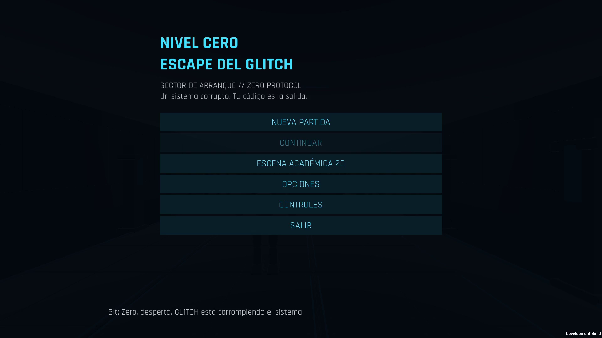
Zero Protocol / Windows PC
Sector de Arranque
Presentación académica · 20 minutos
Fondo: gameplay automatizado Windows. Proyecto Unity 3D y escena académica 2D.
01:00–02:00 · Historia y alcance
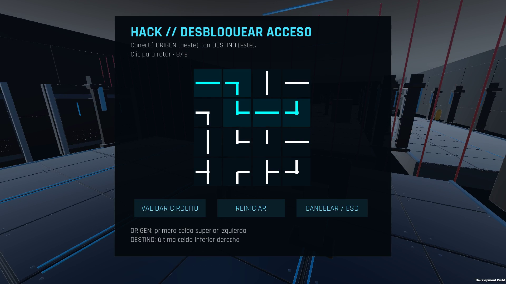
Sector de Arranque implementado. Los otros tres sectores conservan su identidad narrativa.
02 / 14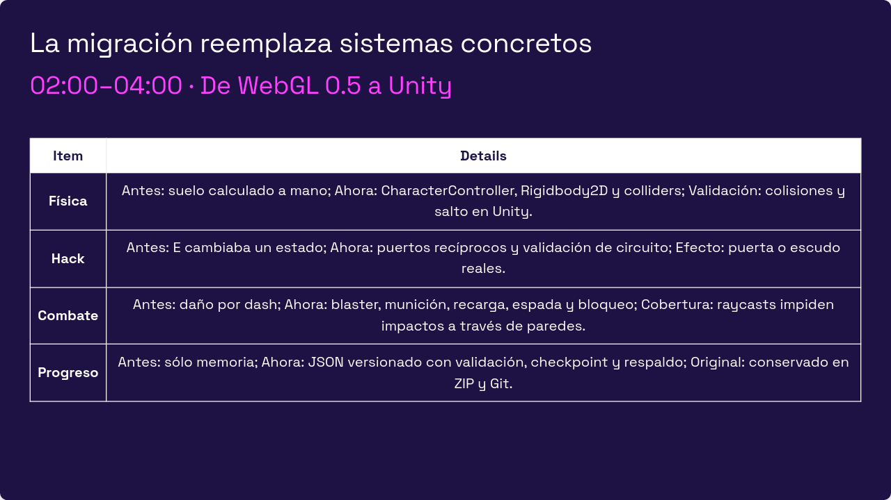
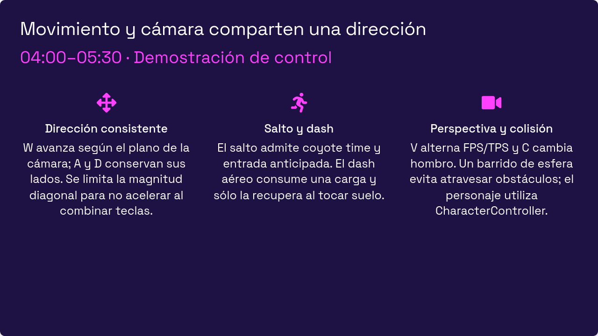
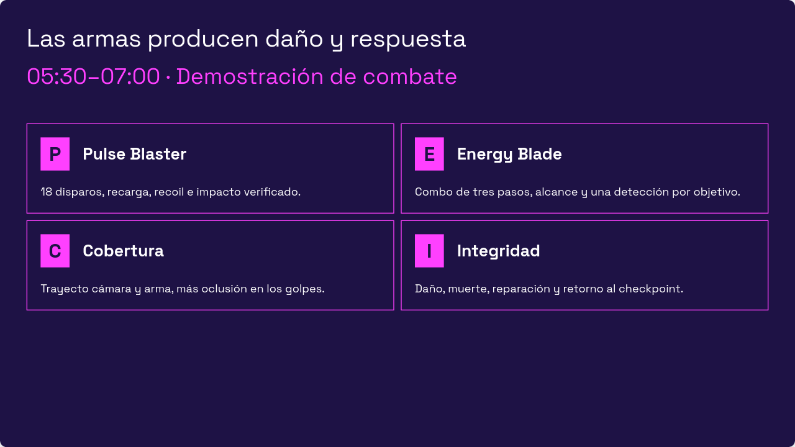
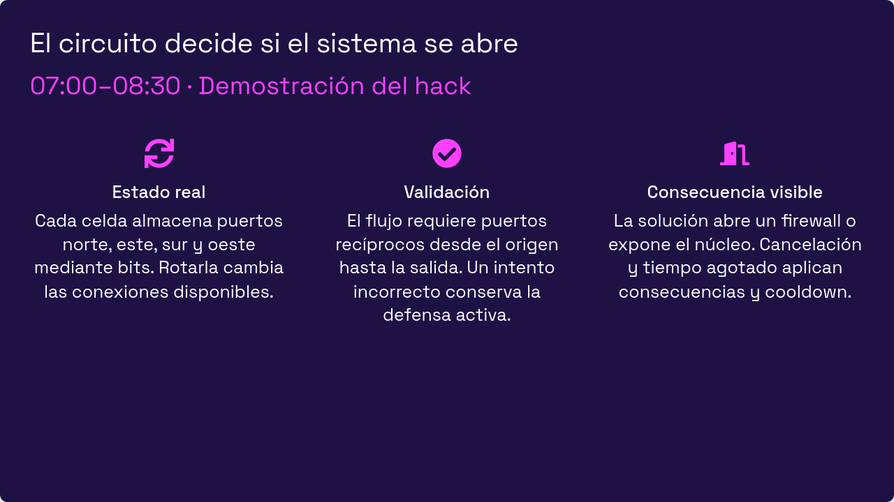
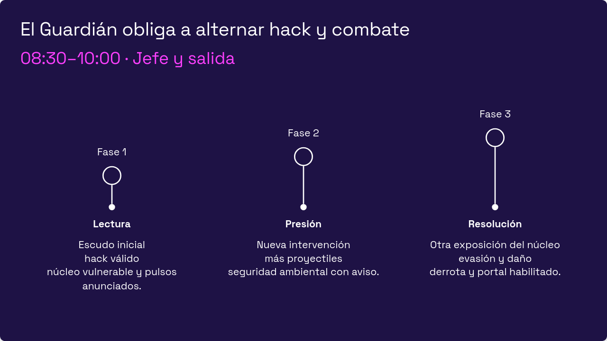
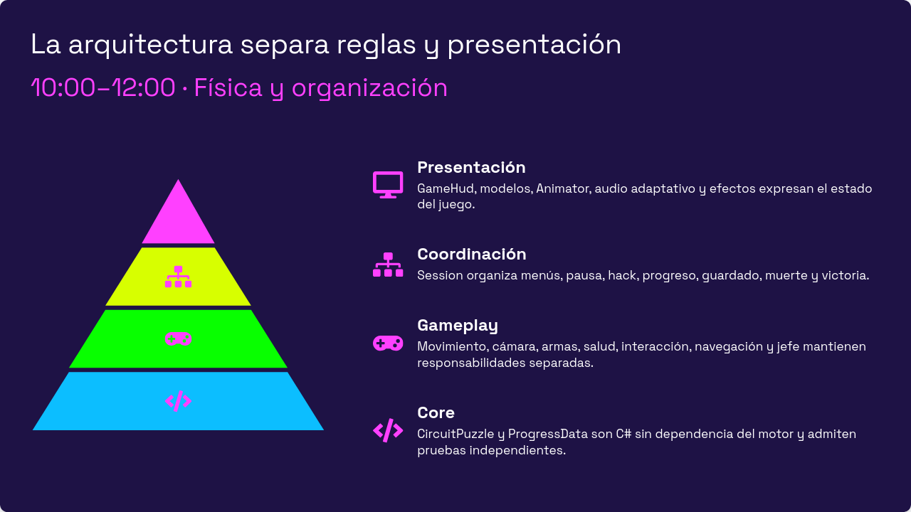
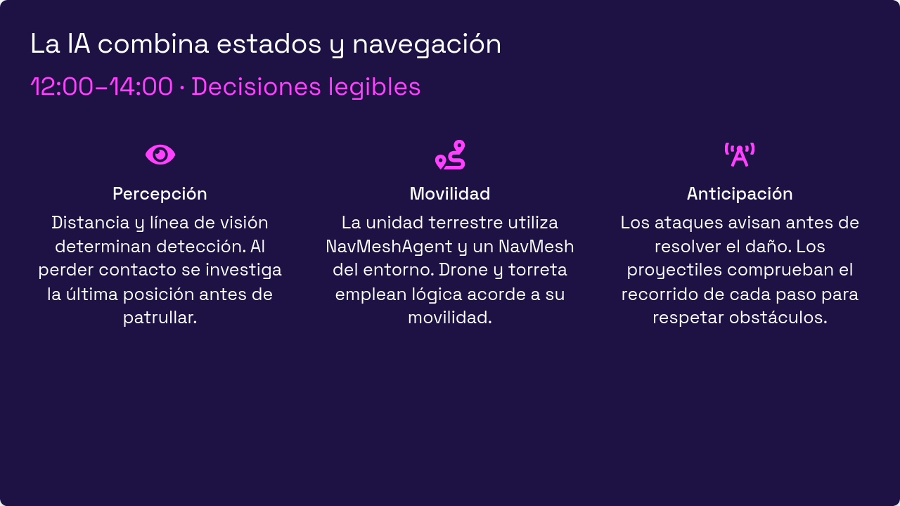
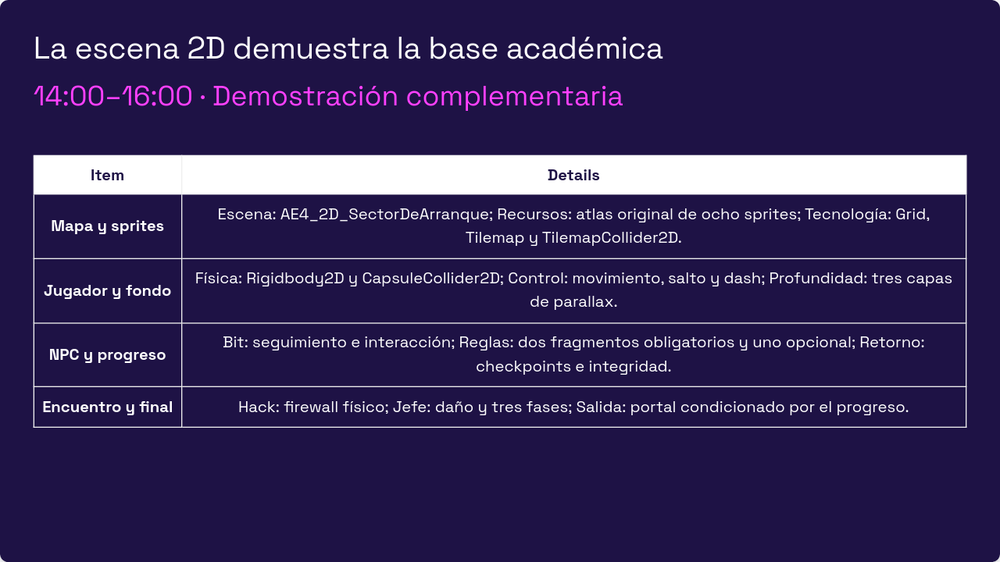
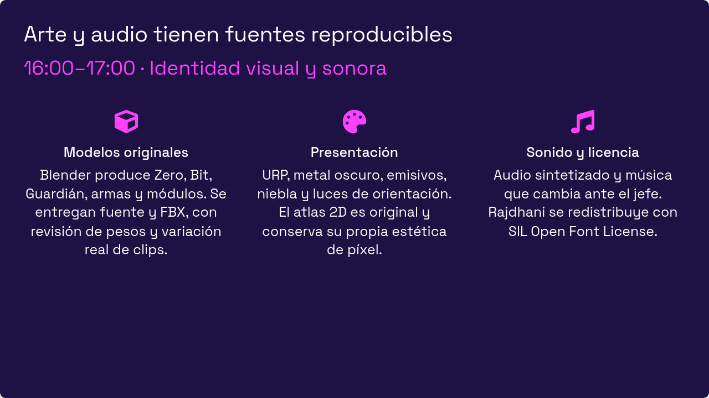
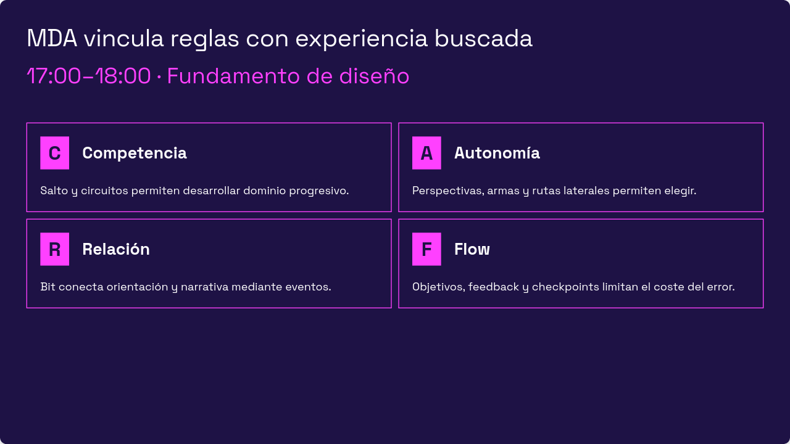
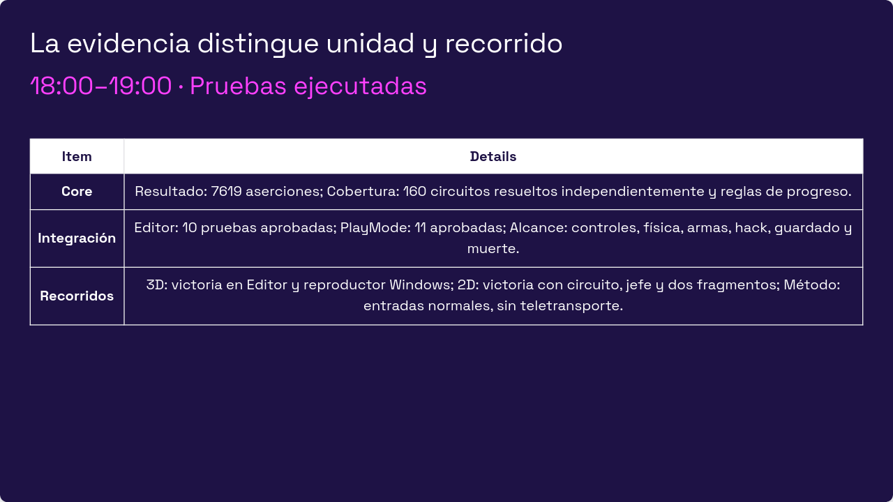
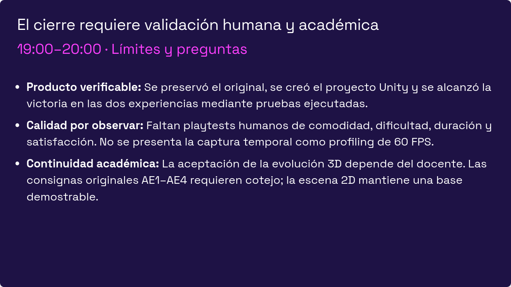